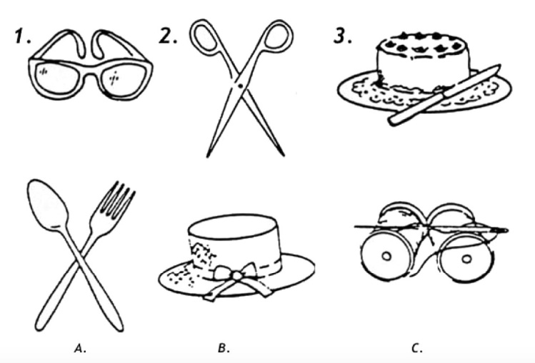
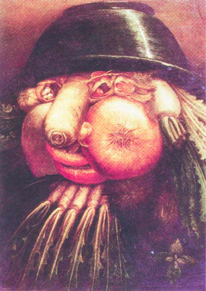

СТАНОВЛЕНИЕ ЧЕЛОВЕКА
Когда человек интегрируется в личность, то его солнечный знак зодиака начинает давать о себе знать, а до того момента «вроде что-то есть схожее, но все как-то размыто». Водой. Помимо общепринятого описания характера знаки Зодиака имеют и множество других смыслов. Каждый знак отражает этап в развитии сознания, как отдельного человека, так и всего человечества.
| Лев | Рак |
|---|---|
| Личности | Массы |
| Огонь | Вода |
| Лобные доли | Лимбическая система |
| Царь Зверей | Звери |
| Солнечное Сплетение | Сакральный центр |
«Однажды большая львица вышла на охоту с новорожденным детенышем. И так случилось, что, преследуя отару овец, мать-львица промахнулась в прыжке, сорвалась с крутого обрыва и разбилась насмерть.
Это было сказано тобой во вьетнамском кафе в Эдмонтоне. Я взял салфеточку, аккуратно положил в нее эту фразу, спрятал в карман и увез с собой Ванкувер на память. Вместе с воспоминанием о том, как ненасытно ты хочешь обо мне заботиться.
Львенок остался в отаре и вырос среди овец. Прошли годы, малыш превратился во взрослого могучего льва, однако считал себя овцой. Он блеял и боялся других животных, как настоящая овца.
Как-то раз на отару напал другой лев. Как же он был удивлен, когда в пылу погони увидел эту нелепую картину: льва, спасающегося бегством и безумно блеющего от страха. Он догнал робкого льва и спросил: „Что ты тут делаешь? Почему ты так глупо себя ведешь? Почему ты, могучий лев, ведешь себя как трусливая безмозглая овца? Что на тебя нашло? Тебе должно быть стыдно!“
Робкий лев объяснил, что он овца и родители учили его блеять и спасаться бегством от могучих львов, наводящих страх на все живое.
Хищник подвел робкого льва к реке и показал ему его отражение в воде, чтобы тот увидел, что он лев, а не овца. Тогда-то лев и прозрел, он открыл в себе прежде неведомые отвагу, силу и величие.» — Суффийская притча
Только вместо овец на колесе Зодиака изображен рак. Символизм рака, его панцирь, отшельническая раковина, инстинкт пятиться назад отражает семейно-домашние ценности подавляющей массы населения. Люди может быть и рады предпринять что-нибудь новое, интересное или социально полезное, но рак в них пятится назад: «Я в домике! У меня семья и дети.» Тем не менее число людей в мире, для которых человеческое «я» становится важнее коллективного, стадного «мы», растет.
Давай помечтаем:
Если средний класс, а это около 700 с половиной миллионов людей на планете, средние люди, которые не купаются в роскоши и не страдают от психологического напряжения нищеты, станут жертвовать всего по $1 каждый день, то в год получится $280 миллиардов.
— Чтобы побеждать мировой голод нужно $30 миллиардов в год
— Чтобы покончить с крайней нищетой за 20 лет нужно $175 000 миллиардов в год
— Чтобы избавиться от безграмотности в бедных странах к 2030 году, нужно добавлять к их образовательному бюджету по $80 миллиардов в год.
Почти уложились в $280 млрд. Только благодаря избавлению от третьей проблемы можно решить и первые две и многие другие. Избавление от безграмотности в мировом масштабе вольет в экономику $1 триллион долларов. А все потому что безграмотные не могут открыть свой бизнес, устроиться на нормальную работу, они с большей вероятностью сядут на соцобеспечение, у безграмотных будет больше проблем со здоровьем, потому что им труднее узнать, как за ним следить, им легче пустить свою жизнь под откос, занявшись криминалом, что негативно повлияет на здоровье и сознание других людей (через продажу наркотиков, через создание криминогенной обстановки в обществе, полной стресса, что будет опускать людей на уровень инстинктов лимбической системы) и увеличит расходы (в некоторых странах очень значительные) на тюремное содержание. Две трети безграмотных, не умеющих ни читать, ни писать — женщины и девушки. Что им остается делать? Детей рожать, плодить еще больше бедноты и терпеть домашнее насилие со стороны близких, не зная из-за неспособности читать ни о своих правах, ни об альтернативах жизни, зацикленной только на свой род.
Если к тому $1 в день от среднего класса добавить $3 в день и $8 в день от двух верхних классов, то примерно за 40 лет на эти деньги можно покрыть часть территории Сахары солнечными батареями, которые обеспечат все энергетические нужды мира. За обесцененную теперь нефть не надо будет вести войны. Никто не сможет политически и экономически раскачивать другие страны через манипуляции ценами на нефть, создавая недовольство населения своим правительством. Очищение воздуха приведет к глобальному улучшению здоровья как физического, так и психологического. А ведь это еще не активная социальная позиция, а всего лишь мизерные затраты сил, времени и энергии. Но даже это заставляет задаться вопросом: «Что случится с человеческими сердцами, когда люди увидят, от скольких бед можно было раньше избавить мир, если бы они только взялись, собрались и договорились? Осознают ли они ничтожность своих бытовых, повседневных желаний, которые до этого занимали все их внимание? Возникнет ли в них стремление больше отдавать? Я верю, что возникнет. Мы ведь не только лишь звери. У нас и сердце есть.»
Этого пока не происходит в массовом масштабе, потому что для большинства людей Мир как Живое Целое, которое оказывает влияние на них, и на который они сами оказывают влияние (своим действием и своим бездействием), просто не существует. Это виртуальная телевизорная реальность, которой нет за пределами домашнего очага. Они о нем просто не знают и поют могучим многомиллионным планетарным хором — «Ничего не знаю. Моя хата с краю.» Коней желаний, личных и семейных — а именно эти желания и обслуживаются глобальной экономикой, разрушающей среду — никто на скаку не остановит. Глаза их зашорены и мчатся они под лозунгом «После нас хоть потоп.»
Чтобы человек очнулся от жизни астрального плана, которая вращается только вокруг эмоций, желаний и привязанностей, ему необходим Кризис. Когда из-за регулярно неисполняемых желаний человека начинают одолевать неприятные эмоции, то эмоциональное тело входит в состояние страдания. Не находя выхода из астрально-эмоциональной ситуации, человек рано или поздно абстрагируется или отрешается от нее, переходя на другой уровень.
Следующая станция — Ментальный План. Двери осторожно открываются в мир мыслей, идей и поиска смысла своего существования. Ментальное тело просыпается, мышление понемногу начинает проясняться и развеивать чары — узлы в астральном теле, которые не дают видеть мир ясными глазами. Узлы желаний, переживаний и страхов, которые надо развязать с помощью терпеливого ума, способного разо-чар-овывать. Великое Канадское Разочарование тебя как раз и отрезвило немного, пробудив твой ум. Никогда прежде в жизни тебя так не интересовало чтение. «Бог в нейронах» на ютубе. «Два раза буду смотреть.» Кто бы мог подумать десять лет назад?
| Человек | Человекоживотное |
|---|---|
| Manas | Kamamanas |
| Clear thinking | Wishful / Fearful Thinking |
| Ясное мышление | Принятие желаемого / переживаемого за действительное |
Manas в переводе с санскрита означает ум, kama — желание, вожделение, эмоция. Отсюда kama sutra — правила вожделения. Неправильные человеческие отношения — это узлы камы, в которых люди сплетены друг с другом, не зная теперь, как из них выпутаться, пусть даже и с запятнанной честью. Развязыванием узлов причинно-следственных связей, разочаровыванием мира занимается как раз manas, ведущий детективное расследование.
Холмс — Manas
Ватсон — Kamamanas
Желания бывают не только инстинктивными и животными, но и в целом добрыми и светлыми, как у Ватсона, но это не отменяет их искажающего воздействия на мышление, не освобождает от заблуждений. Холмс не знает о том, что Земля вращается вокруг Солнца, потому что для него любое знание должно иметь прежде всего практическую ценность, давать ответ на поставленный вопрос. Ватсон знает о Земле и Солнце вовсе не потому что он задавался таким вопросом и нашел ответ самостоятельно через поиск и эксперимент, а потому что знание о вращении Земли вокруг Солнца было принято тогдашним социумом в качестве кода-установки. «Так принято.» Манас приходит в активность и становится пытливым, когда человек не просто пассивно поглощает информацию, а когда он решает задачу, ищет правильные ответы, ищет правильные вопросы. Ум — ячейка или Ум — ищейка. Носитель массового сознания или человек. Кама или манас.
«Если я раскрою ей секрет, она не поверит. Вспомните старую персидскую поговорку: „Опасно отнимать у тигрицы тигренка, а у женщины ее заблуждение“. У Хафиза [Суффийский поэт] столько же мудрости, как у Горация, и столько же знания жизни.» — Установление личности. Рассказы о Шерлоке Холмсе. Конан Дойль.
Эта меткая цитата Конана Дойля на самом деле говорит о камаманасе, который воздействует как на женщин, так и на мужчин, обуславливая и код матери с его привязанностями и жаждой обладания и человеческие заблуждения, которые он вызывает. Кама представляет собой Инь — материалистичную энергию женского типа, создающую в человеке привязанности и желания. Манас без Камы — Янь, мужскую энергию, которая нацелена на то, чтобы исследовать мир, двигаться, действовать. Сами слова расследовать, исследовать, следовать — указывают на движение, путешествие по причинно-следственным связям.

Шерлок Холмс и Джон Ватсон

Грегори Хаус и Джеймс Уилсон

Растин Коул и Мартин Харт
У Ватсона, Марти и Уилсона больше того, что обычно называется «человеческими слабостями», хотя на самом деле речь идет об искажающем действии древних животных отделов мозга и к званию человека ближе как раз Холмс, Хаус и Расти. Эти образы сейчас популярны, потому что манас, свободный от контроля камы — это следующая ступень для человечества. Пока что людей, у которых манас более менее свободен от камы, не так много. Они могут производить впечатление аутистов, потому что им не передается эмоциональное заражение от окружающих. В видео ниже Дэниел не испытывает эмоциональной неуверенности перед аудиторией, но также нельзя сказать, что он эмоционально уверен. А все потому что для него важнее передача мысли, чем собственные эмоции и эмоциональный отклик аудитории. В какой-то степени он отключен от инстинктов массового сознания, поэтому его выступление такое ровное и спокойное.
ХАРАКТЕР, ПРОТЕСТ, УМ
Во все века человечества много разных людей бродило по дорогам своих исследований, но массовая стимуляция человеческих ментальных тел началась со времен Протестантской Реформации. Началось все с того, что немецкий священник Мартин Лютер в начале 16 века, дерзнул выступить с критикой Католической Церкви в своих 95 тезисах. Благотворные для человечества идеи, которые поддерживались реформаторами, включали в себя:
— Отказ от идеи, что Церковь и Священство являются посредниками между Богом и человеком. Протестантское «Всеобщее Священство» давало каждому верующему право совершать богослужение, принимать исповедь и предстоять в таинствах.
— Не Церковь, а Священное Писание является единственным для христианина авторитетом.
— Не обряды, а лишь одна вера способна спасти человека.
— Признаком наличия веры признавалась способность трудиться на благо мира.
— Ни Церковь, ни Папа сами по себе не способны отпускать грехи.
Последний пункт был особенно острым, так как в то время Католическая Церковь отпускала грехи за деньги, продавая индульгенции. «Получите расписочку».
Протестантские идеи настраивали мышление человека на Третью Меру, на снос авторитетов, самодостаточность, личную ответственность и самостоятельное изучение Библии, для чего потребовалось обучить паству чтению и грамоте. Было основано множество церковно-приходских школ. Это открыло колоссальному количеству людей доступ в тогдашний интернет, так как книгопечатание было изобретено Гутенбергом уже в 15 веке. Запущенные процессы способствовали пробуждению самостоятельного или светского (от слова «свет») мышления в европейском населении в противовес тьме церковных догматов. Просвещение — это одновременно и свет и энергия. Когда церковное мышление и церковная воля теряют свой контроль над человеком, то у него появляется свет собственного ума и энергия собственной воли. Спустя какое-то время, используя собственную волю своего ума он берет и открывает секрет электричества и подобно Прометею дарит человечеству свет и энергию, освобождая его от солнечной зависимости. В итоге множество европейских людей поднялись из состояния Рабов и стали Трудягами — самостоятельными, мыслящими, уравновешенными личностями.
Католицизм устроен по сакрально-родовому принципу. Есть Папа, которого должно слушаться беспрекословно, потому что он не ошибается, будучи сакральной фигурой, наместником Христа. Есть Церковь — Мама, которая все простит, потому что идея личной ответственности заменена идеей прощения грехов через посредничество церкви на исповеди. Натворил зла — ничего страшного, ты только извинись и «иди с Богом». В католицизме также есть большой акцент на поклонении Мадонне, Богоматери. Влияет ли такое отношение к религии на другие социальные процессы?
«Множество женщин разводятся из-за свекровей и инфантильного поведения своих мужей, которые полностью зависят от своих матерей» — говорит Джан Этторе Гассани, президент ассоциации итальянских брачных адвокатов. Это явление в Италии называется mammismo и носит эпидемический характер, 30% браков распадается из-за вмешательства свекровей.

Три мафиози за вкусным обедом. Можно провести параллели с российским шансоном.
Ниже описываются проблемы протестантов:
«Но в Британии, у нас обратная проблема. Во многих отношениях между родителями и взрослыми детьми имеется негласное правило, подразумевающее, что лучше держать дистанцию.»
«И, конечно, в будущем, нам лишь бы сбагрить своих родителей в дом престарелых. Идея поселить их к себе часто отметается сразу же, не только детьми, но и самими родителями, которые „не хотят быть обузой“.»
— What’s the opposite of ’Mammismo’?
Человек, который привык быть индивидуалистом и опираться на себя, знает цену энергетическим затратам. Ему просто неприятно от самой мысли, что другие будут расходовать на него свои силы. Поэтому, когда другие что-то делают для него, даже самую малость, то он всегда это с признательностью замечает. Обрати внимание, как часто канадцы говорят «спасибо». Кстати, в школах некоторых протестантских стран причинившему вред школьнику говорят: «Нет, извинения нам не нужны, ты должен объяснить, почему ты так поступил.» («Просто так мы тебе грехи не отпустим. Найди в себе зерно, из которого вырос сорняк»). Это делается для того, чтобы манас школьника, его ум, во время этого анализа одержал победу над его камой, животной эмоциональной природой. Чтобы школьник не утек Водой, проложив себе русло формальными извинениями, его останавливают огненным «Нет», вынуждая его осветить тьму внутри себя. Благо метода в том, что после процедуры человек получает небольшой прирост ментальной осознанности.
Водой своих учений католическая церковь потушит в пастве огонь ума, критического мышления, которое не увидит противоречия в том, что наместник Христа почему-то избирается земными кардиналами и зависит от политической обстановки и вызовет у них моральную слепоту. Уровень коррупции в католических странах выше, чем в странах протестантских, равно как и уровень задолженности Италии, Франции, Испании, Португалии выше, чем долги Германии и Скандинавии. Католическая церковь не способствовала массовому образованию. Образованные массы были ей не выгодны, так как управлять теми, кто начинает соображать, гораздо труднее, чем теми, кто мыслит установками и кодами. Образовательной деятельностью она начала активно заниматься только под давлением Реформации, чтобы взять запущенные в социуме процессы под свой контроль.
«Но даже данные, составленные в 2000 году указывают, что уровень образования протестантов обычно выше, чем у католиков. У них больше возможностей поступить в университет и окончить свой курс.» — Protestant v Catholic: which countries are more successful?
Учеба лучше всего дается тем, для кого труд и самодисциплина является семейной идеологией, кому труднее прощать в себе лень, потакание бесконечным желаниям и прокрастинацию. Протестантское отношение к жизни активировало лобные доли, и человек больше руководился умом, чем желаниями. В протестантизме акцент делается на самостоятельном изучении и понимании Библии, в католицизме люди полагаются на слово священника.
«Любое снижение энергетических расходов мозга вызывает что? Выброс внутренних наркотиков, хороших: канабиодиов, опиоидов и всего остального. И человек млеет, чем меньше думает, тем больше млеет. Отсюда такая религиозность, распространенная во всем мире. Потому что все готово и думать не надо. Есть готовые алгоритмы, вперед и с песней.» — Савельев
Под влиянием Реформации массы стали дробиться на индивидуальные умы, а протестантская церковь — на сотни разных деноминаций, чьи лидеры трактовали Библию каждый по-своему: англиканцы, кальвинисты, баптисты, методисты, меннониты, амиши, адвентисты, пятидесятники, пуритане, квакеры, конгрегационалисты и т.д. В итоге мы имеем ситуацию, при которой народы Северной Америки, Англии, Скандинавии, Нидерландов имеют больше индивидуалистов, чем католические и православные страны, а ячейкой общества там является не столько семья, сколько индивидуум.
«Грех римско-католической церкви состоит в стремлении диктовать людям, как им думать — в плане теологии и политики, — как им поступать, что читать и что носить. И в ещё большей мере это преступление России. Массы людей в чисто католических странах не так свободны в своём мышлении, как те, кто живёт в протестантских странах. Российский народ не знает свободы и не имеет возможности формировать собственную точку зрения. В других же странах ограничения вносят коммерческие интересы и соображения выгоды. Все эти ограничивающие причины препятствуют, тормозят или вообще останавливают рост истинного понимания. Довольно примечательно, что как в католической церкви, так и в России проводники диктата руководствуются в сущности благими намерениями. По их мнению, необразованные массы не в состоянии сами определять, что им слушать, о чём думать и какие принимать решения, поэтому их надо защищать: в одном случае постановлениями и запретами Ватикана (через организованное духовенство), не допускающими никаких сомнений при принятии правильных установок и правильного курса действий; в другом — сокрытием правды о различных событиях и явлениях.» — Лучи и Посвящения
Реформация также способствовала тому, что гендерный разрыв начал постепенно сокращаться. Женщины стали получать образование наравне с мужчинами. Уже в 15 веке в школах одной немецкой провинции девочек было больше, чем мальчиков, что для средневекового общества — настоящая революция. Cлово man — человек касается прежде всего man-тальности, интеллекта, а не пола, третьей меры, а не второй. Вторая родовая связана с половыми железами и лимбической системой. Третья — с животом и активностью всех желез этой области, которые отвечают за выработку энергии из пищи для ее поставки в тело и мозг. Вспомни про два Агни — Огня из Аюрведы, которые находятся во взаимоотношении друг с другом, один в районе живота, другой в районе лба. На украинском мужчина будет чоловiк, от чоло — лоб. Женщина это тоже человек, только человеческое существо, которое находится в женском теле гораздо мощнее зациклено на деторождении, в отличие от мужчины ему об этом напоминают каждый месяц. Женщина, готовая жертвовать собой ради защиты ребенка — это не проявление человеческого Духа, это животная энергия тигрицы, у которой отнимают тигренка.
Из-за такого давления женщине труднее стать самодостаточным человеком, подняться с астрального уровня на ментальный, где ум способен овладевать эмоциями и желаниями. Астральное тело — это персональные лебедь, рак и щука человека. Тебе хорошо знакомы эти внутренние метания. Поэтому так часто мужчины говорят, что женщин не поймешь, сейчас они говорят одно, а через пару минут — совсем другое. Опора на себя, как на ум, а не на стихийную эмоциональную часть, дает уверенность в себе. Эмоции и желания тянут в разные стороны, ум способен быть целенаправленным, если он натренирован в медитативных практиках. The more mindfulness she has, the less she is controlled by her emotions and desires. Этому мешает конституция женского физического тела, которая делает женщину более замкнутой на эмоционально-физические потребности свои и своих близких, а также более уязвимой для эмоциональных оценок общественного мнения массы других женщин, которых объединяет материнское отношение к своим мужьям. «Как ты его одного оставила!»
Заблуждения и наваждения в сознании как женщин, так и мужчин создает одна и та же сила морока, ей и посвящены отрывки текста, в которых речь идет о бессознательности, черной магии, об архетипе «ужасной матери» и превращении в животное. Текст рассказывает о символе карт Таро под названием «Луна». Та самая луна, которая влияет на циклы овуляции у женщин. Некоторые африканские мамаши подчинены этой силе тотально. Помимо страсти к деторождению (NA) население Африки еще воинственно и кровожадно (AD). Некоторые племена следуют очень специфической диете. Уместно задать вопрос — это человеки? Или это Луна их в кого-то обратила? Детективное агенство «Лунный Свет» продолжает расследование.
Новые Идеи касательно роли женщины в обществе, заставили женщин мыслить о себе иначе. Энергия текла за мыслью, ментальные тела женщин наполнялись мыслями более высокими по отношению к мыслям о доме, быте и роде, повышалась женская энергетика.
«В СССР глубоко укоренилось уважение к женщине как к равноправному и деятельному гражданину социалистического государства. Женщины (53,9 % населения СССР в начале 1971 года) составляли в 1970 году 51 % численности рабочих и служащих, занятых в народном хозяйстве страны (24 % в 1928), 48 % работников, занятых в промышленности. Среди специалистов с высшим и средним специальным образованием в 1968 году было 58 % женщин (с высшим образованием 52 %, со средним специальным образованием — 63 %), причём число их возросло по сравнению с 1928 годом в 58 раз. 31 % инженеров, 38 % техников, 72 % врачей (до революции 10 %), 69 % педагогов и культурно-просветительских работников, 39 % научных работников — женщины (1968 год).» — Большая Советская Энциклопедия
Равенство мужчин и женщин наблюдается как раз в странах светских и чемпионы в этом отношении страны скандинавского социализма, на которые протестантизм оказал очень сильное влияние. Гендерное неравенство процветает в традиционных патриархальных странах, где государством управляет Царь-батюшка, Султан-президент, Альфа-самец, там, где стаду нужен Вожак, и где массам нужен Лидер. В отличие от масс личности внимательны, критичны и требовательны к государству, участливы по отношению к обществу, поэтому в светских странах, которых будет становится все больше и больше по мере просвещения людей, государством будет править Rex Pubblica — Власть народа. Это еще один вклад Идей Реформации, до которой государства в нынешнем его понимании не было. Был диктат Правителей и Церкви по отношению к народу. Католическая церковь построена на беспрекословном подчинении слову Авторитета, она Патриархальна (Греч. Patres — Род, Arches — Правящий.).
«Женщины в религиозных [католических] орденах проводят за работой много часов, готовя, убирая и обслуживая кардиналов, епископов и сановников, руководящих церковью, как было заявлено. Работая за символическую плату или без нее, без трудовых договоров, монашенки едва ли получают признание от мужчин, чьи нужды они обеспечивают.
Несколько монашек анонимно признались журналу. „В глазах Иисуса мы все дети Бога, но в их земной жизни некоторые монашенки не видят этого и испытывают большое замешательство и дискомфорт.“ — сказала одна. Монашек „редко приглашали сидеть за столом, который они накрывали“, добавила она.»"
—Catholic hierarchy to be confronted over gender inequality. Guardian
Не напоминает тебе патриархальные семьи? Слабый пол, который должен всю свою силу тратить на обслуживание слабостей пола сильного. В католических монастырях сутаны носят важные дяди, а не мужики. Честный мужик не позволит женщине перед собой унижаться, так как он руководится рассудком, а не церковными или домостройными догматами, которые способны оправдать любую моральную слепоту.
Реформация отменила священность брака, люди могли, пусть и с большим трудом, но развестись, что до этого было запрещено Католической Церковью. Доктрина «Всеобщего Священства» спустила священников, а все они до Реформации были мужчинами, на одну ступень ниже, на уровень паствы, на ту же ступень, на которой находились и женщины. Рывка в сторону равенства не произошло, но это было началом движения в сторону от мизогнии — презрения к женщинам. В протестантских церквях, пусть не во всех, женщины могут принимать сан и совершать богослужения.
РЕФОРМАЦИЯ И НАУКА
Пытливым умам церковные запреты претили всегда, задолго до Реформации, но когда пытливость умов поощряется новой церковной доктриной, которая твердит, что Библию надо изучать самостоятельно, а не через пересказ священника, которая учит людей читать, а стало быть открывает доступ ко всем остальным книгам, то жди беды авторитарная церковь. В Средние Века, когда науки в нынешнем ее виде еще не существовало, ее место занимала схоластика. Ученые мужи собирались вместе, чтобы обсудить вопросы, которые у них возникали по отношению к миру и природе, но ответы они искали не в мире и природе, путем наблюдения, эксперимента и вывода, а в книгах, в Священном Писании и логике Аристотеля. Истина утверждалась тем, кто лучше всех знал Писание и труды Аристотеля и был способен на основании этих авторитетов логично изложить свою точку зрения. Схоластикой в наши дни называют мышление, оторванное от практики жизни. Ум схоласта замкнут сам на себя, на свои собственные логические проблемы. Реформация освободила многие умы от давления авторитетов (ведь оставался еще авторитет и непогрешимость самой Библии), многие фильтры ретикулярной сети, пропускающие информацию из подсознания в сознание, были сняты, что всегда высвобождает какую-то долю внимания. Люди стали обращать свое высвобожденное внимание на то, что раньше игнорировали, будучи занятыми схоластическими спорами — на физический мир, который как раньше полагалось, лежит во грехе, а потому незачем им особенно интересоваться.
«Мы на заре новой эры, так как мы начинаем восстанавливать знание внешнего мира, которое было потеряно в падении Адама.» — Мартин Лютер
Пытливые умы, которые обратили свое вопрошающее внимание к физическому миру, стали строить прагматичную науку. Этот процесс начал разгоняться в эпоху Просвещения
«В Средние Века, обнаруживались тенденции к интеллектуальной автономии, как в примере таких людей как Эразм [Роттердамский]. Но после Реформации, католические лидеры все в большей мере отождествляли такие тенденции с протестантизмом и ересью и требовали католиков быть послушными и преданными церковной дисциплине. По мнению [Джерарда] Ленски, его исследование показало, что эти различия между протестантами и католиками просуществовали до сей поры. Как следствие, «ни одна из преимущественно и набожно католических стран современного мира не может быть определена в качестве лидирующей промышленной страны. Некоторые из католических стран — такие как Франция, Италия, Аргентина, Бразилия и Чили — довольно сильно индустриализированы, но ни одна из них не является лидером в технологической и научной сферах, и нет признаков, что они ими станут.» — Merthon Thesis
Доминирующая энергетика в христианских течениях выводится из того, какие Идеи ими движут, а также из того, как ведут себя люди, находящиеся под их влиянием.
| Протестантизм | Католицизм и Православие |
|---|---|
| Третья Мера | Вторая Мера |
| Личности | Послушные Массы |
| Жить своим умом | Подчинение авторитетам |
| Огонь | Вода |
| Движение | Статика |
| Прогресс | Традиции |
| Новое | Старое |
Не то, чтобы до консервативных людей долго доходит:
— Католическая церковь признала необходимость перевести язык богослужения с латыни на тот, который понимала паства, только в 1962.
— Открытие Галлилео о вращении Земли вокруг Солнца, от которого церковь его вынудила отречься, было признано Ватиканом только в 1992 году.
просто они будут защищать свою неправоту до последнего. Эту свою неправоту они официально закрепили в 1870 году принятием доктрины о папской непогрешимости. Теперь стало неудобно признавать свою погрешимость, так как это грозит потерей лица. Пацан должен отвечать за базар, если он определил себя в старшаки. По форме все это конечно красиво, чинно, церемонно, только по сути очень напоминает Понятия, которые на зоне устанавливает криминальный авторитет.
Вспомни, как отец говорил мне, что слушать себя я не должен, а должен слушаться авторитетных людей, поговорить со священником, потому что он принадлежит к особой касте и только у этой касты есть доступ к Богу. В аэропорту он сказал мне, чтобы я на него не обижался и что каждый сам волен искать свой путь. И его коснулась Реформация.
Чтение, доступ к которому открыла доктрина Лютера, нагружает в основном левое полушарие головного мозга, там находятся все наши речевые центры. Я здесь могу только строить гипотезы, но возможно это привело к развитию левополушарного, рационально-прагматического мышления. Левое разбивает мир на части, его интересует функция, а не форма. Некоторые из тестов, которые проверяют склонность к право- или левополушарному восприятию, включают в себя уже известный тебе:

в котором левополушарные видят связь по функции, а не по форме.
и

в котором левополушарные видят разные овощи (функции) в первую очередь, а не лицо.
Эти тесты проводились в рамках исследования доминирования полушарий у жителей западных и восточных стран. Если ты встанешь лицом к Северу, то твое правое полушарие будет на Востоке, а левое — на Западе. Что и подтвердилось. Азиаты более склонны видеть мир через более древние функции правого полушария, которое видит мир образно, эмоционально и чувственно, обостряя восприятие информации, поступающей к нам через органы чувств. Древним правополушарным потенциалом человека как раз и пользуется католическая и православная церкви, бросаясь человеку в глаза, в уши и в ноздри. Чего не скажешь о протестантских церквях, которые в большинстве своем гораздо скромнее в плане декораций. Католическая церковь отдает предпочтение ритуальным процессиям, очаровывая своих прихожан литургией, исполняемой на древнем, таинственном, могущественном языке. Сильное влияние на речевые центры левого полушария он не оказывает, ведь паства его не понимает. Акцент делается на форме, на статике. Иоанн Павел II в 90-е годы призывал американских католических священников к тому, чтобы они проявляли больше рвения и пыла, без которых их проповедь становилась пустой, другими словами он говорил, что им не хватает Огня. Проблема в том, что этому мешает сама система идей патриархальной католической церкви, где людям активно вменяется чувство вины перед Отцом-Богом и Матерью-Церковью, к которой нужно ходить просить прощения, вставая на колени перед одной из самых кровожадных и алчных в мире организаций. Все это отнюдь не способствует работе центра солнечного сплетения, которое в нормальном активном состоянии дает человеку непокорность перед авторитетами, моральное зрение и чувство справедливости. Протестантские церкви известны своими долгими и энергичными проповедями, они тоже воздействуют на эмоции и органы чувств, но большая роль все же отдается речи и слову. Предпочитая проповедь ритуалу, протестанты стремились вдохновить человека на добрые дела. Акцент делается на функции, на движении и действии.
В исследовании о восточных и западных полушариях были указаны две важные характеристики восточного правополушарного мировосприятия.
— Допущение противоречий
— Акцент на общности и взаимосвязности в противовес индивидуальному саморазвитию
Большинство (не все) католиков допускает противоречие между доктриной о папской непогрешимости и принципом несотворения себе кумиров. Само слово «katholicos» означает универсальный, и именно так церковь себя и позиционирует, как единая всеобщая мать, которая может собрать в своем лоне всех верующих. «Чтобы всех отыскать, воедино созвать и единою черною волей сковать.» — так гласила надпись на кольце всевластия в книге Толкиена «Властелин Колец», книге с христианскими символами и смыслами.
Протестантская доктрина поощряет индивидуализм, деятельную мирскую жизнь и трудолюбие, а навык чтения, помимо доступа к печатному слову дает человеку еще кое-что. Чтение развивает в человеке внимание к мелким деталям. Прагматичное отношению к физическому миру, трудолюбие и предприимчивость становятся двигателем капиталистической промышленности, а развитое внимание к деталям создает хорошую репутацию протестантской продукции. «Deutsche Qualität.» Аккуратность и качество.
«Недавно один писатель попытался сформулировать разницу в отношении к экономической жизни следующим образом: «Католик спокойнее, в нем меньше стяжательского импульса, он предпочитает жизнь как можно более безопасную, пусть даже и с маленьким доходом, жизни захватывающей и полной риска, пусть даже она принесет ему славу и богатство. Пословица шутливо говорит нам: „Либо хорошо ешь, либо хорошо спи“. В настоящем случае протестант предпочитает хорошо есть [огонь в животе все переработает], католик — безмятежный сон.» — The Protestant Ethic and the Spirit of Capitalism
Ты хотела развивать бизнес, пускать деньги в оборот, отца эта перспектива не очень сильно воодушевляла. Взаимодействие, которое между вами происходило и происходит, повторяет в малом семейном масштабе противостояние двух видов энергетики, одна из которых стремится к прогрессу и развитию, другая — пассивна и хочет сохранить статус-кво. Этот раскол и борьба между двумя тенденциями присутствует и в католицизме и в протестантизме, иначе откуда бы в мире взялись католики-первопроходцы в области науки или искусства, и консервативные, застрявшие в прошлом протестанты, такие как амиши и меннониты.
Твои метания между Канадой и Беларусью тоже, как мне кажется, не случайны. Католиков в Канаде больше — 39%, на что повлиял наплыв французских колонистов. Хотя вряд ли психология католика переселенца и первопроходца будет схожа с психологией католика, который предпочитает жизнь как можно более безопасную. Первопроходцы — это рисковые и предприимчивые люди вне зависимости от своего вероисповедания. Протестантов в Канаде тоже хватает, они вторые по численности — 27%. Беларусь страна православная, но есть смысл обратиться к ее истории. Великое Княжество Литовское, в состав которого входила нынешняя Беларусь, было католической страной, но в 16 веке попало под влияние протестантизма.
«Религию только тогда можно назвать истинно народной, когда она сама пробивает себе дорогу, причем не сверху указами князей и королей, а снизу, через простых священников, через обычных крестьян и горожан. И такой христианской религией стал в Беларуси протестантизм.
Когда ВКЛ подписало унию со Швецией в Кейданах в 1655 году, то парламент ВКЛ [Великого Княжества Литовского] состоял из одних лютеран и кальвинистов, включая лишь двух православных и, что удивительно, ни одного католика! Куда же делись все католики и большая половина православных в середине XVII века, если в начале XVI века от всех верующих католики и православные составляли соответственно 38 и 39 процентов? Протестантов в начале XVI века было всего лишь 1,5 процента от всех верующих, если верить статистике. Ни указов, ни приказов об особых условиях протестантам в ВКЛ никто не создавал. Куда как больше, чем лютеран и кальвинистов, в Беларуси было иудеев (10 процентов). И вдруг, через каких-нибудь пятьдесят лет, ВКЛ при католическом короле и великом князе уже можно назвать всецело протестантской страной — страница истории, которую почему-то обходят стороной все белоруские историки!» — Михаил Голденков. Беларусь Протестантская
В Беларуси протестантские пасторы открывали множество школ, учили людей читать, улучшая их внимание к деталям, а значит и будущую репутацию их продукции. «Беларуская Якасць.» Аккуратность и качество. Чем выше и чище энергетика, тем больше объем внимания, который человек может уделять тому делу, которым он занимается.
«Количество приверженцев протестантских церквей растет с поразительной скоростью. Странно, что этого как будто не замечают. Беларусь по умолчанию считают именно православной страной. СМИ, за исключением специальных, о тех же протестантах упоминают крайне редко, так, будто тема эта неоднозначная, сложная и вообще неблагодарная.
Тем не менее динамика очевидна: в 1995 в стране было 178 протестантских общин, к 2005 стало 955. За десять лет их количество увеличилось в 5,4 раза, тогда как количество православных приходов — только в 1,46 раза.» — Беларусь станет протестантской?
Энергия следует за мыслью. Как твою энергию тянуло в Беларусь, так и энергию белорусов тянет к протестантизму, к антипатриархальной религии, которая способствовала в людях развитию самоконтроля, прагматичности, трудолюбия, структурности мышления и тяге к прогрессу.
В Казахстане есть одна народность, которая разделяет с белорусами не только качества предприимчивости и трудолюбия, но и религиозные устремления.
«В наши дни, в те же самые годы когда экономика Южной Кореи выросла с $2.7 миллиардов до $230 миллиардов (1962-89) пропорциональное соотношение протестантов в стране выросло с 2.5% to 27%.» — Three surprising ways the Protestant Reformation shaped our world
Протестантская идеология дает человеку энергию на то, чтобы отказать поползновениям ленивой животной природы. Протестный характер дает силу сказать «Нет». Пару месяцев назад Платошкин выступил перед японскими корреспондентами, огласив позицию свою и народную по Курилам: «Было много японских корреспондентов. Все они подошли ко мне и выразили ВОСХИЩЕНИЕ нашей твердой позицией.» Японцы восхитились отказом. Весьма странная реакция для иностранной делегации, не так ли? Если не знать, что уважение к самурайскому кодексу чести Бусидо живо в японцах до сих пор. Они почувствовали родное и им понравилось.
«Дух бусидо, на котором были воспитаны эти люди, глубоко проникал в мир стремительно развивавшейся экономики. Отныне такие добродетели, как преданность интересам предприятия, чувство долга и добросовестность, уважение к начальству, беспрекословное послушание, дисциплина и пренебрежение собственной выгодой ради общего успеха, перенимали у бывших самураев их сослуживцы и подчиненные.
Этот невероятный успех объясняется во многом трудолюбием и упорством народа, его прилежанием, надежностью, терпением, настойчивостью, никогда не ослабевающей энергией, а также тем, что былые самурайские добродетели — пусть и в измененном виде — продолжают почитаться всеми японцами.» — Как дух бусидо проявляется в Японии сегодня?
Самураи, как и первые протестанты жили по-спартански, во всех смыслах. Одной из основ протестантского капитализма была бережливость и умеренность. Только в отличие от протестантов, спартанцы и самураи были гораздо строже к себе и гораздо ближе к латинскому memento mori — «помни о смерти», памяти о собственной смерти. Характер размывается, когда человек забывается в повседневности и живет так, как-будто он бессмертный, как-будто она где-то там, как-будто до нее еще жить и жить. А как нагрянет, то он как Иван Ильич ошалевает от осознания того, что вместо него жил кто-то другой, а не он, какой-то социальный полуфабрикат или эмоциональный поток. К такому не очень были склонны самураи, которые специально тренировались помнить о своей смертности каждый момент времени, а значит несли ответственность за каждую проведенную в жизни секунду. При подъеме энергии в солнечное сплетение, новое состояние эфирного тела меняет состав крови в физическом теле, поддерживается стабильный уровень адреналина и норадреналина — эти гормоны дают чувство внимательности и бдительности. Вспомни, как оживлялась твоя кровь, когда тебе удавалось отстоять свою позицию. Я помню один такой эпизод и было это после конфликта с отцом, я правда не помню причины. Мы с тобой куда-то шли в районе парка победы и ты говорила о том, как это здорово, как-будто снова живой себя чувствуешь. Но как можно такое состояние удерживать на протяжении жизни? Подсознание может все, как утверждает Джон Кехо. Самураи воспитывали в себе привычку постоянного осознания своей неизбежной смерти. Эта привычка постепенно закрепилась в их подсознании, которое постепенно начинало верить в то, что жизни действительно все время грозит опасность, отчего тело и ум самурая находились в состоянии постоянной боевой готовности. Бусидо говорит, что самурай всегда должен быть готов к бою. Состояние самурайского подсознания поднимало уровень гормонов и нейромедиаторов, отвечающих за внимательность, бдительность, способность к концентрации, скорость принятия решения и находчивость, не имея которой, простые люди, массовое сознание, полностью подчиняются манипулятивных схемам религиозных институтов, государств и всех тех, склонных к манипуляциям и вампиризму лиц, которые ставят себя выше ближнего своего.
Самурайское эфирное тело находчивой Катерины Деминой воздействовало на ее мозг таким образом, что в ней было и здоровое честолюбие и здоровое отношение к собственной смерти. Те же самые качества, что отличали японскую воинскую знать.
«Я говорю: „Так почему они кого-то должны расстрелять, а не меня. Что я прятаться буду?“»
Массы советских людей, сражавшиеся не передовой во Второй Мировой жили в спартанских условиях, но самое главное, они сражались на стороне Света, а не Тьмы. Это не могло на них не повлиять. С фронта вернулись обновленные люди с очищенными душами, с головами, ставшими ясными от постоянного присутствия рядом со смертью, расставляющей точки над i, подсказывающей человеку, что в жизни стоит ценить, а что не имеет особого значения.
«Вэр пишет о феноменальной ясности сознания, которая снисходит на людей в конце их жизни, советуя нам прислушаться к их откровениям и извлечь из них урок.» — О чем жалеют умирающие. Сьюзи Стейнер. Газета Гардиан
«Наконец, экзистенциальный фронтовой опыт заставлял вообще по-иному относиться к социальным условностям. Бывшие десятиклассники и первокурсники возвращались с фронта совсем другими, критичными и уверенными в себе людьми.» — Шестидесятники. Википедия
Благодаря Шестидесятникам у нас есть идея романтического коммунизма и прекрасное советское кино, которое так разительно отличается от фильмов, снятых в эпоху застоя и восьмидесятых. Эту разницу слышно по речи, по человеческим голосам, которые с годами теряли искренность и простодушие. Теплая волна оттепели подхватила многих. Олег Ефремов создал театр Современник, в котором работал Олег Даль и потом в своем интервью рассказывал о том, как хорошо, когда есть в человеке дерзость и находчивость. На английском находчивость будет resourcefulness, resource-ful — полный ресурсов. Очевидно, что речь идет о психических ресурсах, когда есть стремление тратить душевные силы не только на автомобили, квартиры, стенки и прочую ерунду, которая губит творческое начало. То, что с позиции социальных условностей будет наглостью и возможно даже безответственностью, с позиции творчества и его слуги — Олега Даля, будет как раз таки способностью взять ответственность, что на английском будет take charge или, если перевести буквально, «взять напряжение.» Не оскудеют ресурсы дающего.
У Михаила Панова, 64 года, был выбор — слушаться пессимистичных предписаний стандартной медицины или начать жить вопреки социальным условностям. Он должен был выбрать между двумя энергиями. Одна, более высокая, предлагала путь протеста, вторая — путь послушания. Ирония в том, что вторая — это та же самая сила, которая тянет нас на зону комфорта, наслаждения, тепла и уюта, в отшельническую раковину.
| Вторая Мера | Третья Мера |
|---|---|
| Инь | Янь |
| Anima | Animus |
| Тьма | Свет |
| Человекоживотное | Человек |
| Kama manas | Manas |
| Брать и удерживать | Давать |
Философию даосизма большинство людей понимает как гармоничное взаимодействие женского и мужского, Инь и Янь, но эта гармония касается мер более высоких, чем вторая и третья, до которых человечество в массе своей еще не доросло душой.
Волна психологического подъема, тяги к свободе и социальной справедливости, прокатившаяся по миру в 60-е была приостановлена, человеческий голос был приглушен голосом животного. Западный мир и СССР вслед за ним выбрал вторую энергию застоя, потребления, комфорта и моральной слепоты. Очищенная войной душа человечества вместо того, чтобы продолжать дальше расти и светлеть, сделала шаг назад, к животному царству и животным ценностям, по-jal-ела живот свой. У животного тоже бывают разные состояния, из которых можно выделить две полярности — расслабленности и наслаждения и чуткой бдительности, когда они чуют опасность или попадают в экстремальные жизненные условия. Адреналиновые и норадреналиновые состояния бодрости и оживления, испытываемые при обливании холодной водой, во время занятий банджи-джампингом, чувство обостренной бдительности при занятиях по скалолазанию так приятны некоторым людям, потому что ледяной холод, повисание над пропастью или падение в нее тело воспринимает как близость смерти, мобилизуя ум и тело. За этими состояниями стал охотиться Михаил Панов.
«И у меня столько энергии появилось, столько вот планов появилось. У меня сейчас планов, вы не поверите, если за десять лет я их сделаю.»
А все началось с проблем с животом. К слову, hara-kiri переводится как разрезание — kiri, живота — hara. Японское слово hara также означает смелость и ум, что подтверждает все вышеописанное касательно связи живота с умом, решительностью и предприимчивостью, то есть, с hara-ктером. Это подтверждение можно найти и в других языках, в английском to have guts — сметь (буквально «иметь кишки»), в итальянском avere fegato («иметь печень»), в русском «кишка тонка» или «не жалеть живота своего». Kiri похоже на русское «херить», можно понять harakiri в переносном смысле — не жалеть живота, не выбирать путь сбережения жизненных ресурсов. Животные никогда не помещают себя намеренно в экстремальные жизненные условия, они выбирают зону комфорта и не планируют, живут сегодняшним днем.
Из всех животных самыми большими и развитыми лобными долями обладает человек. Не будь его мозг так устроен, у него не было бы потенциала строить планы на 10 лет вперед, на 40, на 60 и выходя даже за пределы земного существования, думая о том будущем, которое его ждет после смерти и контролируя свое поведение с помощью тех же лобных долей, чтобы не попасть в мире ином в экстремальные жизненные условия. Этим протестантизм и любая дисциплинированность, которая идет от религиозной доктрины отличается от дисциплины спартанцев или самураев. Последними в большей мере руководили понятия чести и долга, первыми — отсроченная выгода. Съесть один сладкий зефир сейчас или потерпеть, чтобы получить два позже?
Эксперименты под общим названием «Marshmallow tests», открыли много интересного о человеческой мотивации. Дети, готовые немного помучиться ради будущего, через десять лет показывают лучшие результаты в учебе, в самоконтроле, у них было меньше вредных привычек, они были более коммуникабельны. Таким людям легче ставить долгосрочные цели и достигать успеха. Лобные доли у тех, кто откладывает удовольствие на завтра, светятся ярче на экране МРТ-сканера. У тех, кто ест первую зефирку, не дожидаясь второй, кровь притекает к центрам удовольствия в лимбической системе. Способность откладывать удовольствия на потом не является только лишь врожденной. Если дети не доверяли экспериментатору (чтобы спровоцировать их недоверие он, до того как предложить им зефир, специально не выполнял данных детям обещаний, например, принести цветные карандаши и наклейки, говоря, что карандашей он не нашел), то время их выдержки сокращалось в два раза. Если дети экспериментатору доверяли (потому что он сдержал свое слово насчет карандашей и наклеек), то дети держались в два раза дольше. Очень многое зависело от доверия ребенка. Если это чувство ему было малознакомо, то ребенок, не веря в то, что будущее будет честным по отношению к его усилиям, долго не ждал, брал пока дают. Дают — бери (NA), бьют — беги (AD). Не дожидалось второго зефира большинство детей, росших без отцов, а также детей из семей с низким социально-экономическим статусом, из тех семей, в которых родители вели себя так, что ребенок не чувствовал, что он может им довериться, из семей, которые живут приспосабливаясь, реагируя на обстоятельства, которые, в отличие от более либеральных, эмоционально раскрепощенных семей, плохо справляются с неизвестностью и неопределенностью, как с ними плохо справляются консерваторы с раздраженной амигдалой из вышеупомянутого исследования. Детей, росших без отцов, и семьи, живущие в состоянии эмоционального напряжения, объединяет одно качество — нехватка мужской стабильно направленной ментальной энергии, Янь. Им трудно дисциплинировать себя ради будущего. Моделью мира для ребенка являются его родители. Если нет доверия к родителям, то будущий мир будет строиться по такой же модели, таить для человека одни угрозы и разочарования. Тогда, конечно, стоит брать первую зефирку, когда ты ребенок и первую попавшуюся работу, когда ты взрослый. Мог ли отец довериться своим родителям? Можно ли доверять диким зверям в человеческом обличье?
Перенесем эту ситуацию в более широкий контекст. Католики, угнетаемые собственной церковью и феодальными правителями, предпочитали спокойно жить сегодняшним днем, не рискуя, без приключений. Жадные и ленивые жители Российской Империи, о которых сетовал Антон Павлович, жили под царем-батюшкой, не задумываясь о будущем. Индейские души, которых не только отрывали от «семьи и запрещали им говорить на родном языке и исповедовать свои религиозные верования, но зачастую их мучили и насиловали.» были загублены колонизаторами Канады, которые выступили для них в роли озверевших родителей. Теперь им, потерявшим веру в мир, в разы труднее отказаться от наркотиков и алкоголя, так как это тот же самый первый зефир, только гораздо притягательнее.
— Пререкания
— Нытье
— Пренебрежительное отношение
— Язвительность
— Игнорирование
— Насилие молчанием
— Желание унизить
И другие поведенческие схемы, описанные в брошюре «Aboriginal Lateral Violence» (Междоусбоная агрессия среди индейцев), появляются у коренного населения Канады из-за зажатых, неразрешенных эмоций. Индейский ученик канадских школ-интернатов не знал, куда ему деться, куда спрятаться от злых, психически нездоровых воспитателей. Эти школы специально строили вдалеке от мест проживания индейцев. Подобно зверю, загнанному в угол, ему оставалась только одна стратегия — defensive rage, оборонительная агрессия во всех ее проявлениях. Люди наблюдают, что эмоциональный вампиризм проявляется не при индивидуальном общении, а тогда, когда индейцы собираются в коллектив. Когда они личности, то вроде бы они адекватны и человечны, когда они собираются в массу, то эта адекватность испаряется, ее место занимает животная динамика стада, где, каждый стремится повысить свой ранг и понизить ранг другого. В брошюре ссылаются на патриархальные методы управления индейским населением, как на причину такого поведения. Россией тоже управляют патриархальными методами, а ее население подвержено влиянию тех же самых поведенческих схем из брошюры про индейцев.
«Мы — изнасилованная страна» — режиссер Алексей Герман-Старший.
Под патриархальным феодальным гнетом жил народ, который один австралийский советник по управлению фабриками в 1915 году обозначил как безнадежно ленивый, не ценящий времени народ. Он имел в виду японцев.
Идея гарантированной отстроченной выгоды побуждала протестантов, прогрессивных католиков, капиталистов, японских жителей и советских людей дисциплинировать себя, побеждать свою лень, обуздывать множество своих сиюминутных желаний, чтобы исполнилось какое-то одно, более рациональное с точки зрения будущего. Как ум поднимает энергетику с животной до человеческой, так индустриальное капиталистическое или социалистическое общество, возникшее благодаря уму, готово было поднять человека из низших слоев на другой уровень. По мере отхода от феодального, патриархального общества этажи общественного устройства стали пронизывать шахты социальных лифтов, для человека загорелась лампочка, он понял, что если трудиться и проявлять инициативу, то его поднимут. У него появилось доверие, необходимо для того, чтобы ставить жизненные цели. Раньше он думал наоборот, что если трудиться и проявлять инициативу, то тебя не поднимут, а задавят. По такому принципу устроено стадо патриархальных бабуинов, где понятие личных заслуг замещено понятием авторитета — ранга или доминантности, где выскочек специально не любят. Преодоление желаний приводит к переносу сознания с астрального плана на man-тальный, на котором человек может man-ять самого себя своими же мыслями. Добавь к этому общее обязательное образование, общенародную доступность печатного слова, ставшую возможной благодаря Реформации и получишь человека с оживленным ментальным телом. Лютер удивился бы, доведись ему узнать о том, что Реформация, оживляя умы, довела некоторые из них до такого состояния, что они отказались от церковного мышления вообще, став умами агностиков или атеистов.
Вот тебе пример через забор — ментальные качества Васи Ежова: нестандартное мышление, изобретательность, неожиданный образный юмор:
— А свои драгоценности он зачем-то опускал в стакан с водой.
— Это чтобы никто их по запаху не обнаружил?
устойчивая психика, уверенность в себе и отсутствие веры в Бога. Катя Ежова тоже воспринимает мир через ментальное тело, поэтому людям эмоциональным может показаться, что она слегка холодная и обособленная, что не отнюдь не так. Ее просто не так влечет тепло, возникающее от трения эмоциональных тел друг о друга.
Инстинкт самосохранения ярче проявлен у людей с астральной поляризацией сознания, у тех, кто консервативен, чьи религиозные чувства, бережно хранящиеся в ячейках сознания, находятся под надежной защитой амигдалярных чертей, которые сразу дадут о себе знать, стоит только кому-то дерзнуть эти чувства оскорбить. Человек, поляризованный в астральном теле, воспринимает идею Спасения через призму главного природного инстинкта — как возможность передать свой генетический материал за пределы времени и пространства, в Вечность — Царствие Небесное, в самые наиблагоприятнейшие жилищные условия из всех возможных. Ментальный человек не так подвержен инстинкту самосохранения, потому что в нем больше энергии мужского типа, а мужчины, как известно, себя не берегут.
«Глобально, смерть от самоубийства встречалась в 1.8 раз чаще среди мужчин, чем среди женщин в 2008 году и в 1.7 раз в 2015 году.» — Gender differences in suicide. Wikipedia
«Результаты были весьма впечатляющими, в 19 веке в Пруссии число самоубийств среди протестантов было примерно в три раза выше, чем среди католиков.»
«Число самоубийств [в 2000 году] в протестантских странах составляло 15.5 на 100 000 человек по сравнению с 8.9 самоубийств в католических странах.»
— Protestants more suicidal than Catholics: Study